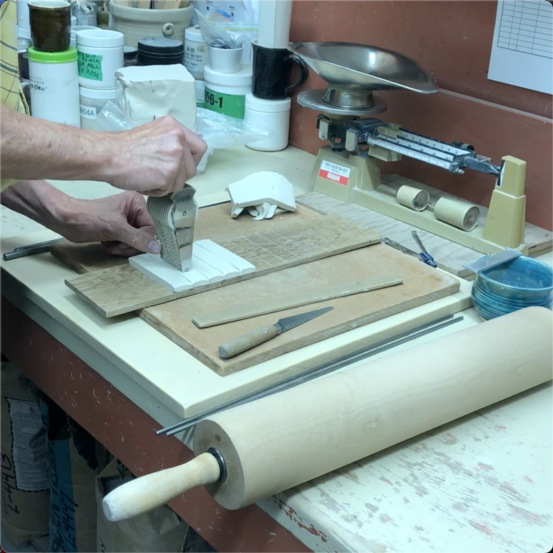
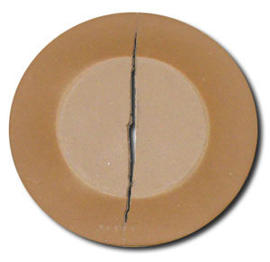
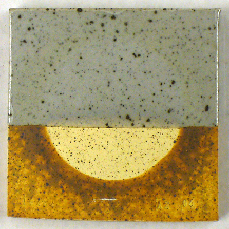
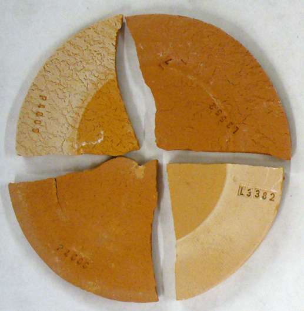
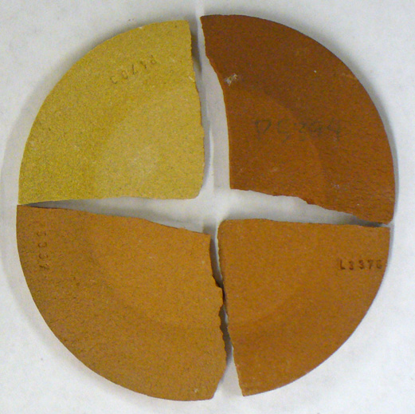
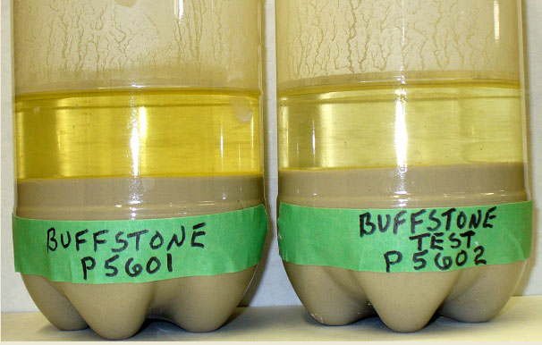
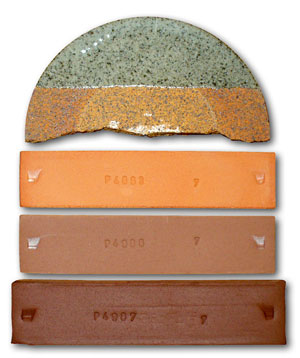
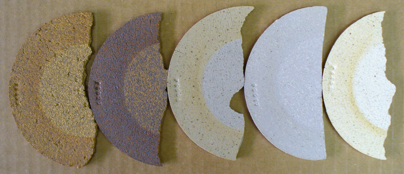
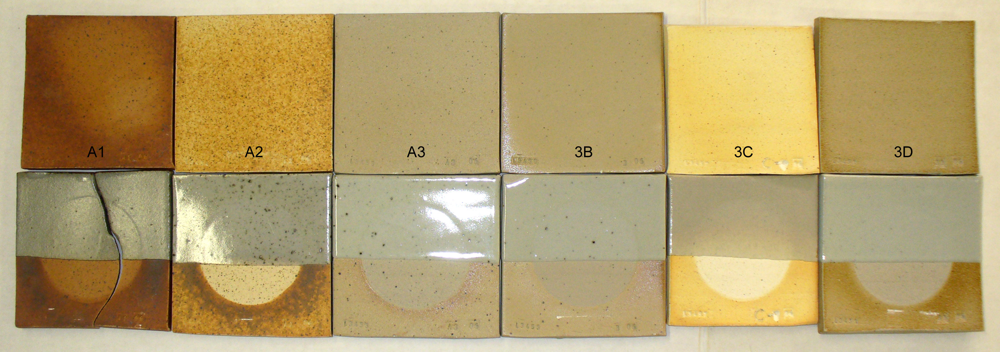

SOLU - Soluble Salts Test
The effectiveness of this barium addition has traditionally been tested by decanting some water from a thin clay/water slurry that has been allowed to settle overnight. A few drops of barium chloride added to this water will result in immediate precipitation of any remaining solubles, causing the water to go cloudy. However the test outlined here is easier and produces a physical result more directly related to how this property affects production ware. It is done by covering the center section of a rolled or pressed plastic disk, to impede its drying. At the same time the outer perimeter of the disk is exposed to heated airflow to accelerate its drying. This process forces water from the slow-drying inner section to migrate to the outer edge, concentrating the salts there. Firing the specimen clearly shows if any of the solubles discolor the surface. This test thus enables a technician to see the concentration of salts and make a judgement if their fired appearance is harmful to product quality or not.
All raw clays contain a certain amount of water soluble salts (i.e. calcium/potassium sulfate). The water in a pugged clay body will slowly dissolve any available salts until it is all taken in solution or the water becomes saturated. When a piece is dried, the water-salt solution moves out to the surface. After evaporation the salts are left behind on the surface of the piece, and when fired they cause discoloration and scum deposits which ruin the appearance of unglazed ware and may interfere with glaze melting, adherence to the clay surface or melt development.
The highest solubles occur in bentonites where they can be so abundant that a fired test bar of the material (80% raw 15% calcine) will appear to be covered with a thick dark-firing glossy glaze. Red earthenware clays and silts tend to have a white scum which is quite unsightly against the dark color of the clay. Ball clays usually fire white or buff and while some are quite clean others display solubles as a brown or grey deposit on the surface, especially at the edges. Stoneware clays likewise will have varying amounts of salts. In some the salts can make an otherwise tan body burn to a deep red surface color. In some the salts melt to give a glossy sheen to the surface, in others they are refractory and simply darken the color of light burning materials. Even refined kaolins can have soluble salts that burn to a grayish or brownish color.
This problem is fundamentally one of cosmetics and is most serious where bare unglazed porous clay will be exposed to wet-dry cycles, especially of the elements outdoors (i.e. brick, tile). The presence of salt scum on the surface of brick is called "efflorescence" and can be very difficult to deal with if there are reserves of salt within the clay matrix. This is because each time it gets wet more is brought out. Brick-layers use acid to remove the scum or they seal the porous bricks with something that closes the pores and prevents wetting (i.e. silicone or polymer solutions).
The presence of soluble salts on the surface of unglazed pottery can be quite unsightly on some types of ware (i.e. red earthenware) but it can also enhance the appearance of the surface (i.e. for reduction fired sculpture certain clays have solubles that highlight textures, edges, and contours). However, salts can introduce problems that go beyond cosmetics where there is interaction with an overlying glaze. Blistering, pinholing and crawling can result where the glaze melt resists mixing with a salt melt.
Another problem with soluble salts is that the glassy surface can stick ware to shelves and lids to ware. This ruins the kiln furniture and the pottery.
In the production of clay bodies it is normal to add up to 0.5% barium carbonate to precipitate these salts from solution. A chemical reaction produces insoluble barium sulphate, and calcium/potassium carbonate from the slightly soluble barium carbonate, and calcium/potassium sulfate. This reaction will not occur properly unless barium is dispersed well and agglomerated particles are broken down.
Procedure
See the DFAC test for information on how to prepare the discs.
-The DFAC specimen will likely crack across the middle during drying. Break one of the pieces in half and fire to the service temperature of the clay.
-Glaze the other half leaving only a narrow unglazed flat edge on which to stand the sample in a slotted holder and fire.
-Assess the results and enter the data into the Testdata Entry Dialog.
Video: Making SHAB, DFAC, LDW clay body test bars

This picture has its own page with more detail, click here to see it.
One-minute video. It demonstrates how to make the test bars for measuring plastic clay body (or clay material) drying and firing shrinkage, fired absorption, a bar for measuring water content and loss-on-ignition and a disk for measuring drying performance and soluble salts content. This method requires no expensive equipment and is within the reach of any technician.
A typical DFAC drying disk of an iron stoneware clay

This picture has its own page with more detail, click here to see it.
The center portion was of this DFAC test disk was covered and so it lagged behind during drying, setting up stresses that caused the disk to crack. This test is such that most pottery clays will exhibit a crack. The severity of the crack becomes a way to compare drying performances. Notice the test also shows soluble salts concentrating around the outer perimeter, they migrated there from the center section because it was not exposed to the air.
Even heavy soluble salts may not have a significant affect on the glaze

This picture has its own page with more detail, click here to see it.
This is a ball clay. They are known to produce this type of soluble salts when fired at high temperature reduction (the inner salt-free section is such because that part of the tile was covered during drying, so the soluble salts from there had to migrate to the outer exposed edge). If soluble salts fire to a glassy surface they can affect the overlying glaze. But in this case they are not and have a minimal effect.
Soluble salts on cone 04 terra cotta clay bodies

This picture has its own page with more detail, click here to see it.
Low temperature clays are far more likely to have this issue. And if present, it is more likely to be unsightly. The salt-free specimens have 0.35% added barium carbonate.
Soluble salts on a range of different cone 6 fired clay brown/tan bodies

This picture has its own page with more detail, click here to see it.
The concentrations are not serious and are typical of what you might find on a commercial body.
Which clay contains more soluble salts?

This picture has its own page with more detail, click here to see it.
Example of sedimentation test to compare soluble salts water extracts from suspended clay. This simple test also reveals ultimate particle size distribution differences in clays that a sieve analysis cannot do.
Test bars of different terra cotta clays fired at different temperatures

This picture has its own page with more detail, click here to see it.
Bottom: cone 2, next up: cone 02, next up: cone 04. You can see varying levels of maturity (or vitrification). It is common for terra cotta clays to fire like this, from a light red at cone 06 and then darkening progressively as the temperature rises. Typical materials develop deep red color around cone 02 and then turn brown and begin to expand as the temperature continues to rise past that (the bottom bar appears stable but it has expanded alot, this is a precursor to looming rapid melting). The top disk is a cone 10R clay. It shares an attribute with the cone 02 terra cotta. Its variegated brown and red coloration actually depends on it not being mature, having a 4-5% porosity. If it were fired higher it would turn solid chocolate brown like the over-fired terra cotta at the bottom.
Various cone 10R clays with soluble salts on the surface

This picture has its own page with more detail, click here to see it.
These disks concentrate the solubles on the outer edge (because of the way they are dried). Soluble salts can enhance the visual appeal of a fired clay but they can also do the opposite.
Ravenscrag Saskatchewan clays fired at cone 10R

This picture has its own page with more detail, click here to see it.
Glazeless (top) and with glaze (bottom): A1 (bentonitic), A2 (ball clay), A3 (stoneware), 3B (porcelains), 3C (lignitic ball clay), 3D (silt). The bottom row has also shows soluble salts (SOLU test).
Variables
DRY - Solubles on Dry (V)
This is observed as coloration discontinuitiy on the unfired specimen using the same method as for the no-glaze fired specimen. It is helpful to record the appearance of the dry disk to be able to compare it with the fired one. In this way it is learned whether the appearance of a discoloration on dry ware is reason for alarm.
FIRE - Solubles on Fired (V)
Observe the difference in color, character, gloss, etc. between the protected and unprotected sections of the disk.
Enter one of the following values:
NIL-If no trace of discoloration can be seen on the disk after drying
LIGHT-If discoloration is just visible
MEDIUM-If discoloration is significant
HEAVY-If discoloration is dark enough to completely change clay color, if it is glossy like a glaze.
Observe any changes in the appearance of the glazed surface over the solubles and over the parts of the body clear of solubles. Rate as above.
SEDI - Sedimentation (V)
Prepare a thin slurry using a set amount of clay and water, mix thoroughly and allow to settle for 24 hours. Note the color of the water in which salts are dissolved.
Related Information
Videos
Links
| Articles |
Simple Physical Testing of Clays
Learn to test your clay bodies and clay materials and record the results in an organized way, understanding the purpose of each test and how to relate its results to changes that need to be made in process, recipe and materials. |
| Articles |
Formulating a Porcelain
The principles behind formulating a porcelain are quite simple. You just need to know the purpose of each material, a starting recipe and a testing regimen. |
| Typecodes |
Material Tests
Test conducted primarily on materials use to make bodies or glazes. |
| Glossary |
Efflorescence
A common problem with dry and fired ceramic. It is evident by the presence of a light or dark colored scum on the dry or fired surface. |
| Tests |
Drying Factor/Water Content/Solubles
|
| Tests |
Drying Factor
The DFAC Drying Factor test visually displays a plastic clay's response to very uneven drying. It is beneficial to show the relative drying performance of different clays. |
 PayPal | No tracking, No ads, No paywall, No transient content! Just organized, concise information constantly updated and improved. Was this helpful? Consider supporting me. |
| By Tony Hansen Follow me on        |  |
Got a Question?
Buy me a coffee and we can talk 

https://digitalfire.com, All Rights Reserved
Privacy Policy